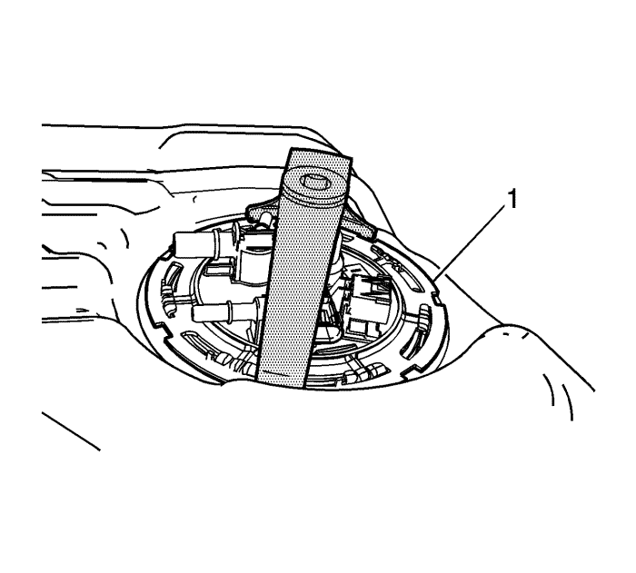

Sustitución del módulo de la bomba del combustible del depósito de combustible
Herramientas especiales
J-45722 Llave de Paso del Depósito de Combustible
Si desea informarse sobre herramientas regionales equivalentes, consultar Herramientas especiales .
Procedimiento de desmontaje
- Desmonte el depósito de combustible. Consultar Sustitución del depósito de combustible : FWD (tracción delantera) → Tracción a las 4 ruedas .
Advertencia: Consulte Advertencia sobre la gasolina y sus vapores en la sección Prólogo
- Desconecte el tubo en U del módulo secundario de la bomba de combustible. Consultar Sustitución del módulo de la bomba del combustible del depósito de combustible -Secundario .
- Desenchufe los conectores eléctricos (1).
- Desconecte los conductos de combustible y de emisión de vapores (2). Consultar Reparación del cierre rápido con collar de plástico .

- Utilizando una llave J-45722, retire la junta de cierre de la leva (1) girándola en sentido contrario a las agujas del reloj.
- Retire el módulo principal del depósito de combustible (1) y la junta tórica (2).
- Si sustituye solamente el módulo de la bomba de combustible, retire el sensor principal del nivel de combustible. Consultar Sustitución del sensor del nivel de combustible principal .
Procedimiento de montaje
- Si sustituye solamente el módulo de la bomba de combustible, instale el sensor principal del nivel de combustible. Consultar Sustitución del sensor del nivel de combustible principal .
- Coloque una junta tórica NUEVA (2) y el módulo principal del depósito de combustible (1).
- Utilizando una llave J-45722, instale la junta de cierre de la leva (1) girándolo en sentido de las agujas del reloj.
- Enchufe los conectores eléctricos (1).
- Conecte los conductos de combustible y de emisión de vapores (2). Consultar Reparación del cierre rápido con collar de plástico .
- Conecte el tubo en U al módulo secundario de la bomba de combustible. Consultar Sustitución del módulo de la bomba del combustible del depósito de combustible -Secundario .
- Monte el depósito de combustible. Consultar Sustitución del depósito de combustible : FWD (tracción delantera) → Tracción a las 4 ruedas .
| © Copyright Chevrolet Europe. All rights reserved |